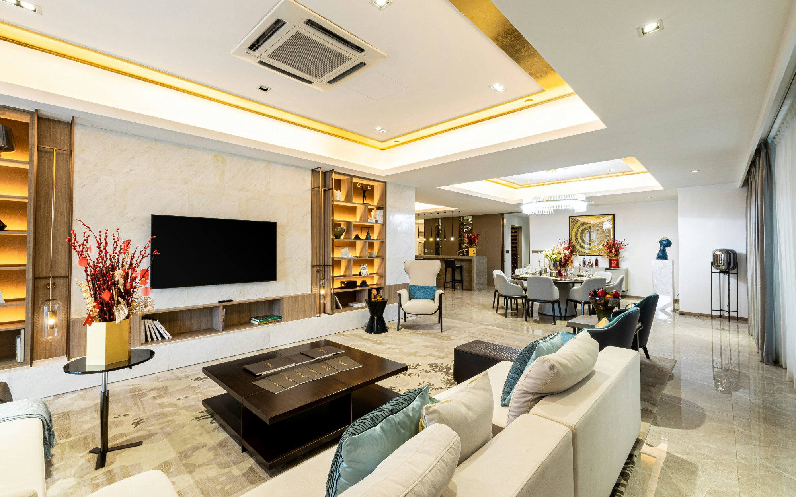

Estate upgrades that add the most value in South Florida

Not all home improvements are created equal. Some transform daily life and add significant value to a property. Others cost a great deal and deliver neither. For luxury estate owners in South Florida, understanding which upgrades are worth making — and doing them to the right standard — is the difference between a wise investment and an expensive mistake.
This guide covers the upgrades that consistently deliver the strongest combination of lifestyle value and financial return in Miami and South Florida's luxury market.
Outdoor living — the highest return category in Miami
South Florida's climate is its greatest asset, and outdoor upgrades consistently outperform other categories in terms of both lifestyle impact and property value. A luxury home in Miami without a well-designed outdoor space is fundamentally incomplete — and the market prices it accordingly.
A custom pool remains the single most impactful outdoor upgrade. In neighbourhoods like Miami Beach, Coral Gables, Coconut Grove and Star Island, a high-quality pool can add $50,000–$150,000 or more to a property's value, and its absence is a meaningful detractor for buyers at the luxury level. A well-designed pool with integrated spa, water features and smart automation is now an expectation rather than a differentiator.
Outdoor kitchens and entertaining areas are the natural companion to a pool investment. Combined, they transform the garden into the home's primary entertaining space — something Miami's year-round outdoor lifestyle demands. The best outdoor setups in South Florida feel like an extension of the interior rather than an afterthought.
In Miami's luxury market, outdoor living upgrades return more per dollar invested than almost any other category. The climate makes them usable year-round — which is not true in most other major markets.
Smart home systems
Integrated smart home technology has moved from a luxury differentiator to a standard expectation in Miami's $3M+ property market. Buyers at this level increasingly expect professional-grade lighting control, automated shading, whole-home audio, integrated security and remote climate management.
A well-executed smart home system — properly designed, installed and programmed by a certified integrator — adds value and reduces time on market. More importantly, it transforms the daily experience of living in the home. The key word is "well-executed" — a poorly implemented system is worse than no system at all, as it creates frustration rather than ease.
Kitchen and primary bathroom renovations
At the luxury level, kitchens and primary bathrooms remain among the most scrutinised spaces in any property transaction. An outdated kitchen or bathroom in an otherwise exceptional estate is a consistent negotiation point for buyers.
For South Florida estates, kitchen renovations that integrate indoor and outdoor cooking and entertaining — with a pass-through to an outdoor kitchen, for example — are particularly well received. Primary bathrooms that evoke a spa environment, with generous shower space, premium stone, freestanding tubs and excellent lighting, consistently command premium valuations.

Kitchen renovations that connect indoor and outdoor entertaining are particularly valued in South Florida.
Landscape and curb appeal
First impressions matter enormously at the luxury level, and landscape quality is one of the first things buyers and visitors notice. A well-designed landscape for a Miami estate goes beyond lawn maintenance — it includes mature tropical plantings, lighting, hardscape elements and, for waterfront properties, dock and seawall improvements.
The ROI on professional landscape design at the luxury level is consistently strong. The investment is relatively modest compared to structural improvements, but the impact on perceived value and kerb appeal is disproportionate.
Home theaters and dedicated entertainment spaces
A purpose-built home theater is a meaningful differentiator at the luxury level — not every estate has one, and for buyers who entertain frequently or have families, it is a genuinely compelling feature. A well-designed theater adds tangible value and is one of the more distinctive features a property can offer.
The key is quality of execution. A half-finished or poorly designed theater is a liability rather than an asset. A purpose-built room with proper acoustic treatment, a quality projection system and thoughtful design adds value and generates genuine buyer enthusiasm.
What home upgrades add the most value in Miami?
Outdoor upgrades — pools, outdoor kitchens and entertaining areas — consistently deliver the strongest returns in Miami's luxury market. Smart home systems, kitchen and bathroom renovations, and landscape improvements also perform well.
Does a pool add value to a luxury home in Miami?
Yes. A well-designed custom pool can add $50,000–$150,000 or more to a Miami property's value. In luxury neighbourhoods like Miami Beach and Coral Gables, a pool is often expected — its absence can be a meaningful detractor for buyers.
Are smart home upgrades worth it in Miami?
Yes, particularly for high-value properties. Buyers at the luxury level increasingly expect integrated smart home systems. A well-executed installation adds value and reduces time on market.
A private concierge for luxury estate owners.
Estate Circle connects luxury homeowners with the best vetted specialists for high-end estate projects — custom pools, home theaters, smart home systems, wine cellars, outdoor kitchens and more. We find the right people for your specific project, brief them fully before they visit, and stay involved throughout so you never have to chase a contractor.
Ready to upgrade your estate?
Contact us and we'll find the right specialists for your project, coordinate everything, and stay involved from start to finish.
Contact UsNo commitment. We'll follow up within 24 hours.